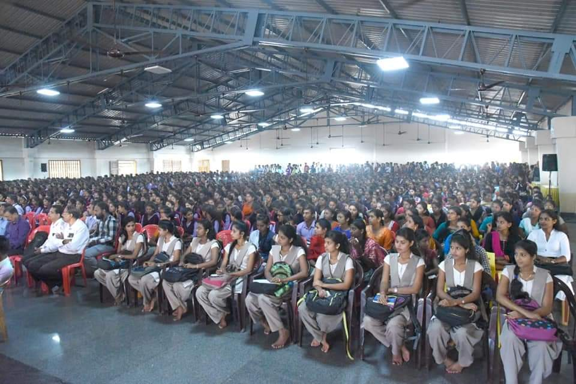

We actively organised one of the biggest fair in Coastal Karnataka by providing excellent job opportunities for job seekers who are in search of the perfect one. More than 140 company recruiters have participated in this job fair , Out of 7000 candidates successful registration, 1109 candidates were given call letters on spot and rest 2709 candidates were shortlisted.
In life every candidate has to make an effort to get identified. Getting a job is a target of more people especially, Youths after graduation. Sanchalana Trust has conducted Udyoga Mela to help the unemployed candidates to get placed. Sanchalana has successfully placed more than 4000 candidates. It is an effort to bridge the gap to industry and academia.
Udyoga Mela conducted by Sanchalana is a platform for unemployed graduates or the graduates who are seeking for the new opportunities to get placed. Incase, if the candidate cannot get placed due to lack of employability skills Sanchalana Trust provides training on Communication Skills, Interview Skills, Technical Skills etc. which will help to increase the candidate's confidence and make them prepared for the interview.